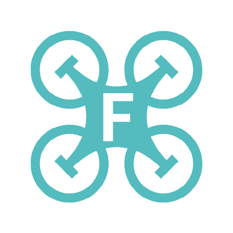

FINDRONE
発見履歴
0
FINDRONE
探す
※探したい物体の名前や特徴から物体検知を行います
設定
※サーバID・カメラIDの設定を行います
決定
探索開始
探索終了
×0
履歴
ステータス: 未接続
カメラ映像
閉じる
カメラ映像を閉じています
サーバID
接続
カメラID
接続
QRコード読み取り
カメラ常時表示
探す画面を開いたときに映像を表示
ON
通知音
物体を発見したときにサウンド再生
OFF
ステータス: 未接続
設定を保存
ホーム
探す
設定
一覧
📂 発見履歴
全消去
✕
画面をタップして閉じる